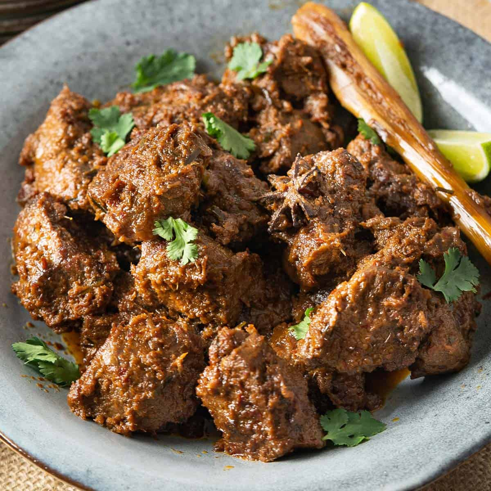

Rendang

Beef rendang is a rich, slow-cooked Indonesian dry curry made by simmering beef in
coconut milk and a spiced aromatic paste until the liquid reduces and caramelises
Ingredients
- 3 tbsp vegetable oil
- 2kg beef
- 5 lemongrass
- 2x 400ml cans coconut milk
- 2 kaffir lime leaves
- 3 and half tbsp chicken stock
- 2 tbsp tamarind paste
- 1 tsp golden caster sugar
- 15 dry chillies
- 6-8 baby shallots
- Thumb-sized piece ginger
- Thumb-sized piece galangal
- 2 tsp mustard seeds
- 2 tsp tumeric
- 10 curry leaves
- 700g jasmine rice
Instructions
- For the paste, soak the chillies in boiling water for 15 mins. Drain, remove seeds and
whizz w ith rest of paste ingredients in food processor until smooth
- Heat oil in wok. Fry paste for 5 mins until aroma is released. Add beef and lemongrass,
and mix well. Once beef starts to lose its pinkness, add the coconut milk and 250ml water.
Bring to the boil, then lower to simmer uncovered. Stir occasionally to avoid sticking.
- Meanwhile, toast the coconut in a frying pan on low heat for 5-7 mins until golden brown.
Set aside to cool. Using a blender, coarsely blend to finger pieces. Put to one side.
- After 2 hours, add the cocoonut, kaffir lime leaves, chicken stock, tamarind paste,
sugar and salt to the pan. Simmer for 30 mins. It's ready when the meat is tender and almost
falling apart.
- For the rice, use a saucepain with a lid. Heat the oil and add the mustard seeds. Once the
seeds start popping, add tumeric, curry leaves, and rice, and mix well. Add the chicken stock
and 1 litre of water. Bring to boil, then turn down to lowest simmer and cook covered for 5
mins. Remove from heat, and leave to steam for 25 mins
Home